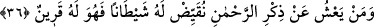
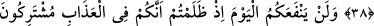
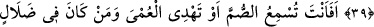
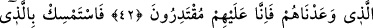
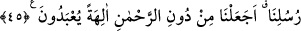

ŞÜPHESİZ SEN,
DOSDOĞRU YOLDASIN
36. Kim Rahmân’ı zikretmekten gâfil olursa, yanından ayrılmayan bir şeytanı ona
musallat ederiz.
37. Şüphesiz bu şeytanlar onları doğru yoldan alıkoyarlar da onlar, kendilerinin
doğru yolda olduklarını sanırlar.
38. O şeytan dostu kimse, en sonunda bize gelince arkadaşına: Keşke benimle
senin aranda doğu ile batı arası kadar uzaklık olsaydı, ne kötü arkadaşmışsın! der.
39. Zulmettiğiniz için bugün (nedâmet) size hiçbir fayda vermeyecektir. Çünkü
siz, azapta ortaksınız.
40. (Rasûlüm!) Sağırlara sen mi işittireceksin; yahut körleri ve apaçık sapıklıkta
olanları doğru yola sen mi ileteceksin?
41. Biz seni onlardan alıp götürsek de yine onlardan intikam alırız.
42. Yahut onlara vâdettiğimiz azâbı, sana gösteririz. Çünkü bizim onlara
gücümüz yeter.
43. Sen, sana vahyedilene sımsıkı sarıl. Şüphesiz sen, dosdoğru yoldasın.
44. Doğrusu Kur’an, sana ve kavmine bir öğüttür, şereftir. İleride ondan sorumlu
tutulacaksınız.
45. Senden önce gönderdiğimiz elçilerimize (ümmetlerine) sor! Rahmân’dan
başka tapılacak tanrılar (edinin diye) emretmiş miyiz?
“Kim Rahmân’ı zikretmekten gâfil olur” zikirden yüz çevirirse “yanından